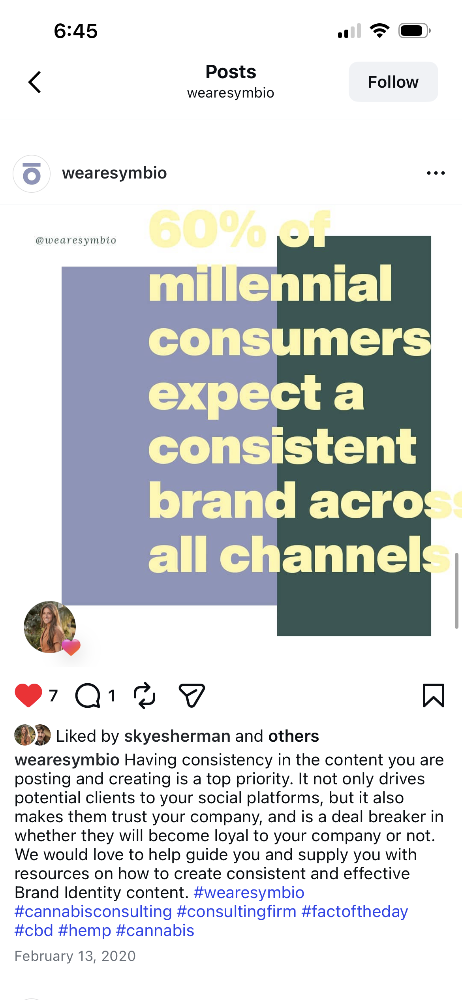
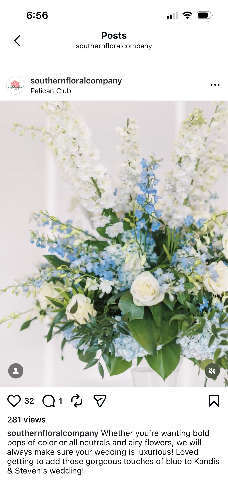
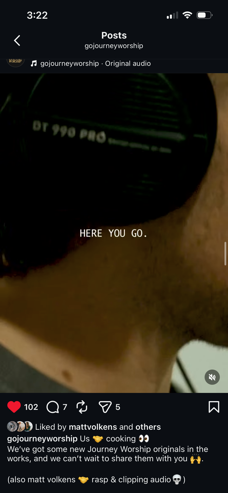
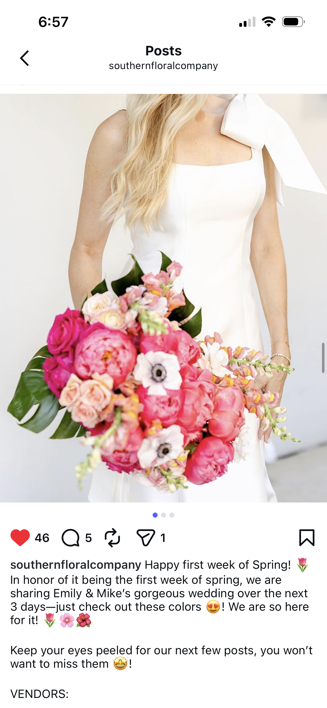
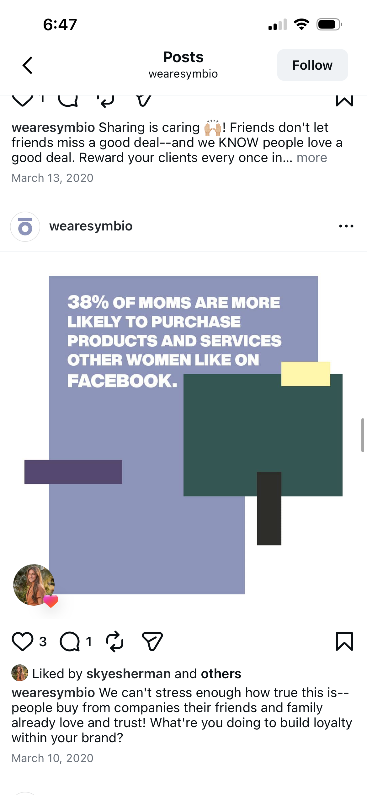

The Social Feed
Curated captions that engage, retain, and resonate.

"Sharing is caring 🕊!"
Friends don't let friends miss a good deal--and we KNOW people love a good deal. Reward your clients every once in...
View Full Post
"Last night we saw chains break..."
strongholds fall, oil stream down, hearts break open, repentance pour out, and the Spirit of the Living God move throughout the room.
View Full Post
"Whether you’re wanting bold pops of color or all neutrals and airy flowers,"
we will always make sure your wedding is luxurious! Loved getting to add those gorgeous touches of blue to Kandis & Steven's wedding!
View Full Post
"Us 🤝 cooking 👀"
We've got some new Journey Worship originals in the works, and we can't wait to share them with you 🙌. (also matt volkens 🤝 rasp & clipping audio 💀 )
View Full Post
"*cue @hilaryduff* 🎶 this is what dreams are made of 🎶"
still not over this wedding! VENDORS:
Photographer: @jacquicole
Planner: @59andbluebellevents

"We can't stress enough how true this is—"
people buy from companies their friends and family already love and trust! What're you doing to build loyalty within your brand?
View Full Post